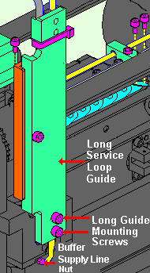
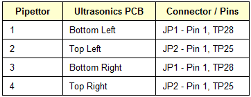
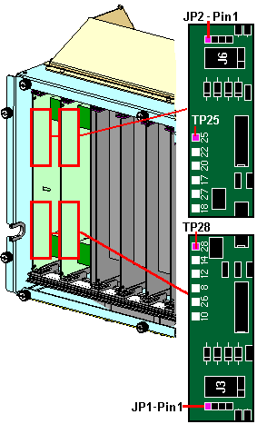
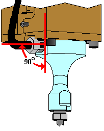

Adjusting Ultrasonics Transducer Voltage Using Baseline Calibration
This procedure describes how to adjust the ultrasonics transducer voltage using the baseline calibration.
- replacing the pipettor buffer supply line
- replacing a transducer
When troubleshooting transducer problems or replacing other parts, refer to the RP: Adjusting Ultrasonics Transducer Voltage procedure.
-
Measure the temperature of the transducer.
- Open the main upper right and left covers on the instrument.
- Remove the cover from the upper right card cage.
- Bypass both the upper right and left cover interlock switches with interlock switch bypass tools.
- Initialize the instrument to the Ready state.
- Measure the temperature of the transducer. If it is outside of the range of 35 °C to 39 °C, then adjust the transducer temperature so that it is in range.
-
Drain the pipettors in preparation for ultrasonics adjustments.
Caution: To prevent the ultrasonics adjustment from failing or causing erroneous calibrations, remove the liquid from the pipettor probe and tubing before checking or adjusting the ultrasonics.
- Select Diagnostics > Device Diagnostics > Digital Devices > Peristaltic and Vacuum Pumps.
- Select the Vacuum On option for the reagent probe wash towers.
- Disconnect the quick-disconnect fitting at the fluid reservoir to drain the buffer supply line. Using an empty syringe or canned air, push the air through the buffer supply line.
- Clear the Vacuum On option for the reagent probe wash towers.
- Reconnect the quick-disconnect fitting at the fluid reservoir.
- Select Done.
-
Prepare for the baseline calibration.
-
Remove the long service loop guide from the side of the transducer. Only remove the two 3/32-in long guide mounting screws. Do not remove the inner black guide cover.

-
Remove the buffer supply line nut or CnS connector. If the buffer supply line tubing twists with the nut, then the nut is seized and it may be necessary to remove the transducer to remove the supply line.
Note: Refer to the RP: Replacing Ultrasonics Transducer procedure.
-
Remove the set-screw from the transducer housing (if applicable).
Note: The CnS transducer does not have a set screw.
- Check that the set-screw is not bent. if it is bent, straighten it.
-
Check that the slot in the transducer horn is aligned to the set-screw.
- Remove the set-screw, and use a small hex wrench to feel that the slot is centered
- If the buffer supply line nut is tilted towards the front or back of the instrument, then the slot in the transducer horn is not aligned to the set-screw.
- If adjustment is needed, then use a 5/16-in wrench to turn the transducer horn in the housing.
-
Fully install the set-screw, and then back it out two turns (if applicable).

-
Remove the long service loop guide from the side of the transducer. Only remove the two 3/32-in long guide mounting screws. Do not remove the inner black guide cover.
-
Measure the baseline voltage.
- Select Ultrasonics > Ultrasonics Adjustment.
- Select the correct, drained pipettor to be adjusted.
- Do not change the displayed voltage or frequency values from the default values.
- Select Adjustment.
-
Select
OK on the pop-up with countdown clock, and the pipettor sonicates at all power levels:
- If the adjustment passes, then proceed to any of the remaining pipettors.
- If the adjustment fails, then refer to Ultrasonics Troubleshooting.
Ultrasonic Guidelines Ultrasonic Tips - The adjustment routine passes.
- The high-power DA is 825 or less.
- It is common for the first attempt to fail, but subsequent attempts should pass. If the consecutive attempts follow a Pass, Fail, Pass, Fail pattern, then refer to Ultrasonics Troubleshooting- Change Level 1 Voltage.
- If the high-power result is greater than 825, then verify that the tubing is completely drained of fluid, that the buffer supply line nut, z-guide, and set-screw are not touching anything, and that the pipettor is not positioned down into the wash tower.
- If the incorrect pipettor was selected and a fluid filled pipettor was calibrated, then that pipettor must be calibrated.
- The instrument takes a few seconds to update the power level fields and indicate a pass or fail status.
- Select Done > Ultrasonics > Ultrasonics Setting.
-
Connect an approved, calibrated multimeter to the pins for the pipettor being adjusted. Set the multimeter to read V AC using the first of the four pins as a test point.


-
Select the correct drained pipettor being serviced, and then select
Sonication Power High.
Note:
- If the screen says High, then reselect High to verify that the correct setting is selected.
- Confirm that the Duty Cycle is 100%, and the Hold Radio option is selected.
-
Select the
Sonicator On option and immediately observe and record the AC voltage from the multimeter. Clear the
Sonicator On option within five seconds.
Caution: Verify that the z-guide and buffer supply line nut are not touching the transducer or transducer housing.Caution: To prevent damage to the ultrasonic components, do not leave the sonicator on for more than five seconds at a time.
-
Determine the next step using the following table.
If the voltage is then 187 - 207 V AC and stable Note: Normal voltage readings decay approximately 4 to 7 V and then stabilize. The reading increases slowly as the transducer heats up. Unsteady voltages continue to decay.Assemble Parts not 187 - 207 V AC but is stable - Verify the Sonicator Power is set to High and repeat voltage check
- Select Done.
- Select Ultrasonics> Ultrasonics Adjustment
- Select the correct pipettor being serviced.
- Adjust the Voltage value on the screen as necessary to obtain a target output value of 197 ± 5 V AC when measured on the PCB
- Select
Adjustment
to save the new voltage value.
Note: If the Adjustment button is not selected or if the Adjustment doesn't pass, the new voltage value will not be saved.
- Return to the Ultrasonic Settings screen and repeat the voltage check at the PCB.
- Repeat these steps until the measured voltage at the PCB is 197 ± 5 V AC then proceed to the Assemble Parts step.
not 187 - 207 V AC and is not stable Verify the Sonicator Power is set to High and repeat voltage check. If the issue continues, refer to the RP: Troubleshooting Ultrasonics procedure for additional troubleshooting.
Note: The ultrasonics subsystem can perform optimally anywhere from 187 - 207 V AC. To minimize variation between probes, a target of 197 ± 5 V AC is set when the measured voltage is not within the 187 - 207 V AC range and is being adjusted.
-
Assemble the parts.
-
Secure the buffer supply line nut according to this table:
Caution: Ensure that the leading edge of the crowfoot is not hitting the bottom retaining plate of the transducer housing. If it is hitting the plate, the fitting could be torqued incorrectly.
If tubing then Tips has plastic CnS fitting turn fitting until it clicks N/A has metal nut and crowfoot tool and the torque wrench are being used torque the buffer supply line nut to 40 in-lb (4.519 N•m) Hold the z-guide in the recessed area of the transducer to position tubing.
Open the SPU to provide more working area.
has metal nut and 1/4-in open-end wrench is being used tighten the buffer supply line nut to approximately 40 in-lb -
Measure the AC voltage of the ultrasonics.
Caution: Verify that the z-guide and buffer supply line nut are not touching the transducer or transducer housing.Caution: To prevent damage to the ultrasonic components, do not leave the sonicator on for more than five seconds at a time.
- Select Diagnostics > Device Diagnostics > Ultrasonics > Ultrasonics Settings.
- Select the correct drained pipettor being serviced, and then select
Sonication Power High.
Note:
- If the screen says High, then reselect High to verify that the correct setting is selected.
- Confirm that the Duty Cycle is 100%, and the Hold Radio option is selected.
- Select the Sonicator On option and immediately observe and record the AC voltage from the multimeter. Cancel the Sonicator On option within five seconds.
-
If the voltage is more than 10 V AC from the baseline voltage and stable, remove the buffer supply line nut, reassemble the ultrasonics parts, and recheck the AC voltage.
Tips:
-
Loosening and retorquing the buffer supply line nut without removing it from the transducer might bring the voltage down within range.
If this process is performed more than five times and the voltages are still not matching, then try increasing or decreasing the torque on the buffer supply line nut to between 30 and 50 in-lb.
-
-
Attach the z-guide to the side of the transducer with both screws so that the tubing is perpendicular to the transducer with the z-guide attached.

-
Measure the AC voltage of the ultrasonics.
Caution: Verify that the z-guide and buffer supply line nut are not touching the transducer or transducer housing.Caution: To prevent damage to the ultrasonic components, do not leave the sonicator on for more than five seconds at a time.
- Select Diagnostics > Device Diagnostics > Ultrasonics > Ultrasonics Settings.
- Select the correct drained pipettor being serviced, and then select
Sonication Power High.
Note:
- If the screen says High, then reselect High to verify that the correct setting is selected.
- Confirm that the Duty Cycle is 100%, and the Hold Radio option is selected.
- Select the Sonicator On option and immediately observe and record the AC voltage from the multimeter. Cancel the Sonicator On option within five seconds.
-
If the voltage is greater than 10 V AC from the baseline voltage and stable, remove the z-guide and reattach, and recheck the AC voltage.
Tip: If this process is performed more than ten times and the voltages are still not matching, then refer to troubleshooting procedures.
-
Secure the buffer supply line nut according to this table:
-
Adjust the ultrasonics through the user interface.
When all pipettors are completed, proceed to verification.
-
Verify that the probe is not positioned down in the wash tower.
Caution: To prevent the adjustment from failing or causing an erroneous calibration, do not position the probe down in the wash tower.
- Select Diagnostics > Device Diagnostics > Ultrasonics > Ultrasonics Adjustment.
- Select the correct, drained pipettor to be adjusted.
- Do not change the displayed voltage or frequency values from the default values unless the Ultrasonic PCB was replaced. If the Ultrasonic PCB was changed to P/N B48070 (RoHS PCB, blue color) from the previous P/N B08911 (non-RoHS, green color) then refer to the RP: Adjusting Ultrasonics Voltage After PCB Replacement procedure to adjust the output voltage. The PCB part number can be found on the edge of the board.
- Select Adjustment.
-
Select
OK on the pop-up with countdown clock, and the pipettor sonicates at all power levels:
- If the adjustment passes three times (refer to the ultrasonics guidelines), then proceed to any of the remaining pipettors.
- If the adjustment fails, then perform ultrasonics troubleshooting.
Note: Refer to the RP: Troubleshooting Ultrasonics procedure.Ultrasonic Guidelines Ultrasonic Tips - The adjustment routine passes three consecutive attempts in the user interface.
- The high-power DA is 825 or less.
- The high-power DA values do not differ by more than 10 during the three adjustments.
- It is common for the first attempt to fail, but subsequent attempts should pass.
- If the high-power DA is greater than 825, then verify that the tubing is drained completely and the pipettor is not positioned down into the wash tower.
- If the incorrect pipettor was selected and a fluid filled pipettor was calibrated, then that pipettor must be calibrated.
- The instrument takes a few seconds to update the power level fields and indicate a pass or fail mode.
- When all pipettors are completed, select Done.
-
Verify that the probe is not positioned down in the wash tower.
-
Prepare for system operation.
Caution: Verify that all quick-disconnect fittings and the nut on the buffer supply line are connected securely.
-
Verify the reagent pipettor probe tip alignments to the wash tower, reagent carriage, and reagent pack in the x, y, and z directions.
Note: Refer to the RP: Aligning Reagent Pipettor procedure.
- Prime each pipettor a minimum of four times.
-
Measure the temperature of the transducer and verify that the temperature is still in specification (35 °C to 39 °C).
Note: There must be fluid in the tubing during this step.
- Remove any interlocks and close all covers.
- Initialize the system.
-
Verify the reagent pipettor probe tip alignments to the wash tower, reagent carriage, and reagent pack in the x, y, and z directions.
-
Verify system operation.
-
Perform system verification as stated in the Verification of Service Repair document .
Refer to the Admin: Verification of Service Repair document.
-
Perform system verification as stated in the Verification of Service Repair document .